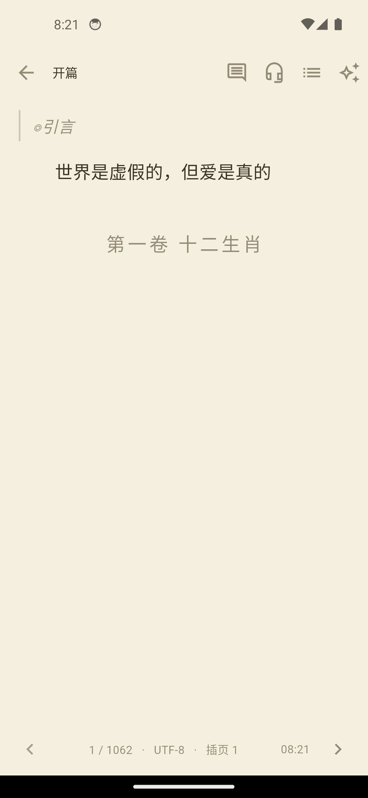

01 / BEFORE
Pre-reading report
Cast graph, romance structure, pacing, narrative focus, and potentially sensitive passages—always linked back to source chapters.
Novel is a reading companion for Chinese web fiction. It helps you decide what to read, find your way back into a long story, and keep useful notes—without sending your library to a cloud.
Long-form web fiction asks different questions before and during a reading session. Novel gives each moment its own place.
Cast graph, romance structure, pacing, narrative focus, and potentially sensitive passages—always linked back to source chapters.
Chapter overviews, character lookup, semantic search, reading-position recovery, and lightweight annotations while you stay in the story.
Small models and inspectable rules run locally. The app keeps the reader in control of data, workload, and evidence.
The interface showcase is bilingual; the novel content pipeline is currently tuned for Chinese web fiction.




Putting a model on a phone is only the beginning. Novel adapts the work around the reader, the battery, and the device.
Small slices, long intervals, and model unloading where possible. Let the phone read with you.
A steady background pace for chapter analysis and retrieval while the device remains responsive.
Use available resources to complete a requested result sooner, still respecting thermal and battery limits.
Charging state, battery, temperature, idle time, memory pressure, and task priority are considered before each slice of work. Workload modes adjust scheduling, thread count, intervals, and model residency—not the tuned 8K context.